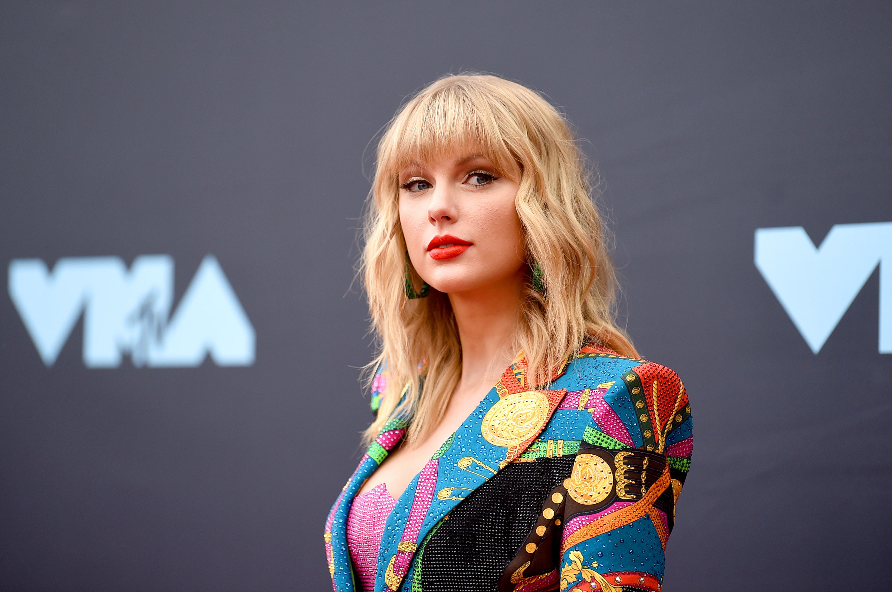

These are the best singers, rappers, musicians, and of course artists known from all over the world. They make sure that you got something nice to listen to, and make a lot of money from monthly streams. These artists will keep on impressing their fans, and will keep on gaining popularity.
Adele has been the most liked artist, from keeping up her charity work with Amnesty International, who helps children with life threatening disorders to stay alive. Adele has also released amazing ear warming music on youtube which reached more than 200 million views from the song “Easy On Me” in just a couple of days. She has also given out other great hits, such as To Be Loved, Love is a Game, Women Like Me, and many more just in 2021.
Ed Sheeran is a British musician, and is known worldwide. Ed Sheeran started performing on the street, or in bars where many were big fans of his music. He is exceptional on many instruments, such as vocal guitar, piano, and bass drums. Not only is Ed good at singing, but he has even been one of the stormtroopers in Star Wars, and been invited to be in the Netflix original movie “Red Notice '' Where he played as himself. In 2019 Ed Sheeran was congratulated on getting the Global Success Award, and in 2020 was he the winner of the British Single of the Year with his single “I Don't Care” Ed Sheeran is a talented musician and will amaze his audience more in the near future.
The American rapper Lil Nas X is a popular musician and songwriter. His real name is Montero Lamar Hill, and got his first major breakthrough from the song “Old Time Road”. The song “Old Town Road” Was Streamed 2.5 Billion Times In The U.S. In 2019, he made more than 1 million dollars to his bank account. In 2021 he wrote, and sang the songs “Industry Baby'' which actually was a charity event to help people who got out of prison, ''Holiday,''Kick It”, “Bring U Down” and many more. Even though Lil Nas X didn't win as many prizes in 2021, was 2019 a big year for him where he won 5 awards - MTV Video Music Award in 2019, MTV Video Music Award in 2019, Grammy Award in 2019.
BTS is a South-Korean K-pop group, and is most known in more advanced cities where social media plays a big part of people's life. BTS is an acronym and stands for, Beyond the Scene. The people who dance and sing for BTS are always together at concerts or singing practices, and are just boys. The group members are Suga who takes care of the rapping, Jungkook which is the main vocalist, V which is one of the normal singers, Jimin is the lead vocalist, Jin is one of the singers (often in the background), RM and J-Hope are both rappers for the group. BTS have made many popular songs such as “Permission to Dance”, “Life Goes On”, “Savage Love” and “DNA”. In their music videos it is more playful and has a multicolored background. This is because in K-pop it is normal to have the background more colorful, and more “fun” like texture.
Juice WRLD is an American rapper and an artist. He is very popular on tiktok, and a decent amount on youtube. He is known for the songs "All Girls Are the Same" and "Lucid Dreams". He was born and raised in Chicago, Illinois, before moving to Los Angeles, California. Juice WRLD have won the American Music Awards and won the category of Favorite Hip-Hop Album in 2021.
Photo Credits: https://www.vg.no/rampelys
The Weekns is a Canadian blues-artist, but also a pop musician. The artist's real name is Abel Makkonen Tesfaye, and was born in 16. februar 1990, Toronto, Canada. Abel have written many popular songs such as Blinding Lights, One Right Now, Take my Breath, After Hours and many other great hits. The Weeknd has also won other great prizes during 2021, such as artist of the year, album of the year and contemporary R&B recording of the year (After Hours), single of the year (“Blinding Lights”) and songwriter of the year.And he is planning on winning more prizes around 2022 and keep on writing great hits.
Ariana Grande-Butera is an American singer and actress. She started her career in the Broadway musical 13 in 2008 with Elizabeth Gillies, before playing the role of Cat Valentine in the Nickelodeon TV series Victorious and in the spin-off series Sam & Cat. She has also been one of the judges from the popular TV-series “The Voice”, where she was liked by many. Ariana has won the American Music Award for the best artist, American Music Award for best pop / rock album and the American Music Award for Favorite Pop Song.
Taylor Alison Swift (born December 13, 1989 in Reading, Pennsylvania) is an American Grammy Award-winning singer, guitarist and songwriter. She is also known for writing detailed songs about her personal life and has received a lot of media attention because of this.
Photo Credits: https://www.thetealmango.com/featured/
Billie Eilish is a successful artist and a songwriter. She has gained a lot of popularity in 2021, and wrote several famous hits. Billie eilish was born 18. desember 2001 Los Angeles, California, USA and she is 20 years today. Billie Eilishhas written and sang “Happier Than Ever”, “lovely”, “Male Fantasy”, “Overheated”, and “Lost Cause”. Billie Eilish has also been the second artist in Grammy history to sweep the Big Four categories: album of the year, record of the year, song of the year and best new artist. She is a talented artist and many of her fans can't wait for her next big hit.
Of course we had to include the biggest, and most controversial rapper in the whole world, Kanye West. His real name is Ye, and was born 8. juni 1977, Atlanta, Georgia, USA and is actually 44 years old today. Kanye west has only been a rapper or a record producer, but he has even tried to be America's next president by competing in elections. KAnye did lose though, but it was extremely funny to watch him try to be America's next president. Kanye West has written many songs and raps throughout 2021, such as “Come to Life”, “Believe What I say”, “Jonah”, “No Child Left Behind” and many more. Kanye West has even said something extremely weird on national TV, Check it out here: 5 of the most weirdest kind of things shown on TV